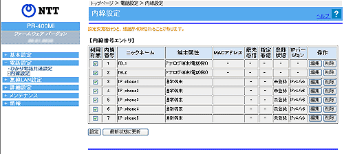

| ひかり電話サービスをご契約でない場合は、ひかり電話の設定に関するメニューや画面が表示されません。 |
| 本商品の内線機能に関する設定を行います。 |
＜お知らせ＞
|
| ※「Web設定」画面に表示されているボタンについての説明は こちら |
|  |
|
内線番号
|
内線設定画面
|
|
1〜2
|
アナログ端末
|
|
3〜7
|
IP端末
|
| 1. 使用する「内線番号」の「利用有無」欄のチェックボックスをチェックする ※ 同時に使用できる内線番号は最大7つまでです。 |
|
| 2. ［設定］をクリックする |
| 1. 使用しない「内線番号」の「利用有無」欄のチェックボックスのチェックを外す | |
| 2. ［設定］をクリックする |
| ［内線番号エントリ］の中から編集したい内線番号の行末にある［編集］をクリックする | |
| ＜「アナログ端末」の内線番号を選択した方＞ | |
| ［内線設定（アナログ端末）］の編集画面が表示されますので、そちらの画面で編集・設定します。 ［内線設定（アナログ端末）］の説明はこちら |
|
| ＜「IP端末」の内線番号を選択した方＞ | |
| ［内線設定（IP端末）］の編集画面が表示されますので、そちらの画面で編集・設定します。 ［内線設定（IP端末）］の説明はこちら |
| ［内線番号エントリ］の中から削除したい内線番号の行末にある［削除］をクリックする |
- 優先着信ポートを有効に設定した場合、アナログ端末（電話機1-2）の内線番号は、無効にできません。無効にする場合は、優先着信ポートの設定を無効にしてください。
- 優先着信ポートを有効に設定した場合、IP端末の内線番号は、有効にできません。有効にする場合は、優先着信ポートの設定を無効にしてください。
- 内線設定を削除しても、内線番号は初期値に戻りません。
本商品を初期化すると、内線番号も初期値に戻ります。
- IP端末の内線設定を削除すると、「内線設定（IP端末）」のパスワードは自動生成されます。
| |||||||||||||||||||||||||||||||||||||||||||||||||||||||||||||||||||||||||||||||||||||||||||||||||||||||||||||||||||||||||||||||||||||||||||||||||||||||||||||||||||||||||||||||||||||||||||||||||||||||||||||||||||||||||||||
| |||||||||||||||||||||||||||||||||||||||||||||||||||||||||||||||||||||||||||||||||||||||||||||||||||||||||||||||||||||||||||||||||||||||||||||||||||||||||||||||||||||||||||||||||||||||||||||||||||||||||||||||||||||||||||||

- IPv4のみを使用するIP端末と、IPv6のみを使用するIP端末との間では内線通話はできません。
- アナログ端末（電話機）とIPv4を使用できる端末との間では、内線通話が可能です。
- アナログ端末（電話機）とIPv6のみを使用する端末との間では、内線通話はできません。